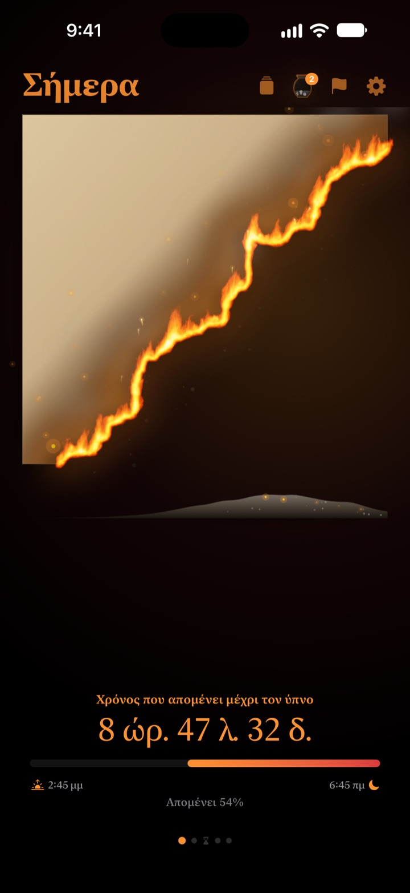
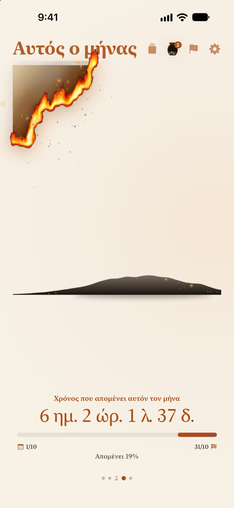
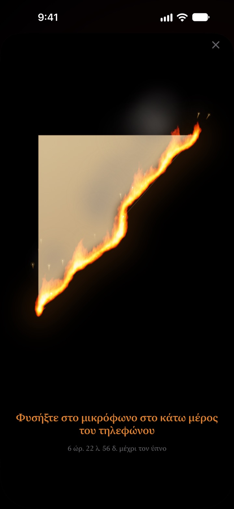
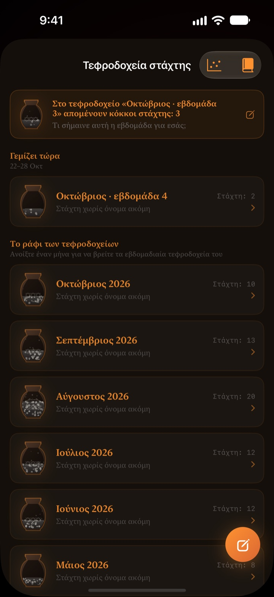

Ό,τι μένει από το σήμερα
καίγεται μπροστά σου
Ένα βράδυ που σε αριθμούς μοιάζει αθώο φαίνεται αλλιώς όταν είναι περγαμηνή που φλέγεται. Μισή ώρα πριν τον ύπνο, φύσα στην οθόνη, σβήσε τη φωτιά και κλείσε τη μέρα.
Η φλεγόμενη περγαμηνή, το σβήσιμο με φύσημα και οι απολογισμοί είναι δωρεάν.

Δοκίμασε να τη σβήσεις
Πήγαινε την ώρα λίγο πριν τον ύπνο και μετά κράτα πατημένο το κουμπί ή φύσα στο μικρόφωνο.
Σου έχει τύχει να δεις ξαφνικά ότι πήγε μεσάνυχτα;
Τρως βραδινό, κάθεσαι λίγο, και η μέρα έχει τελειώσει. Οι αριθμοί στο ρολόι μοιάζουν ίδιοι κάθε βράδυ, γι' αυτό δεν νιώθεις τον χρόνο να λιγοστεύει. Η Φλεγόμενη Περγαμηνή δείχνει ό,τι απομένει σαν περγαμηνή που καίγεται, για να το καταλάβεις πριν χαθεί το βράδυ.
Η μέρα, η εβδομάδα, η χρονιά καίγονται
Από τη στιγμή που ξυπνάς ως την ώρα του ύπνου, η περγαμηνή καίγεται αργά. Με τον ίδιο τρόπο βλέπεις τι μένει από την εβδομάδα, τον μήνα και τη χρονιά.
Πρόσθεσε έναν στόχο με ημερομηνία ως προθεσμία και η αντίστροφη μέτρηση τρέχει δίπλα.

Σβήσε τη μέρα με ένα φύσημα
Από 30 λεπτά πριν τον ύπνο, φύσα στη φλεγόμενη περγαμηνή για να σβήσεις τη φωτιά. Χρησιμοποιείται μόνο η δύναμη της ανάσας, τίποτα δεν ηχογραφείται.
Το θραύσμα που μένει φυλάγεται. Γύρισέ το και γράψε στην πίσω πλευρά μια γραμμή για τη μέρα σου.

Ο χρόνος που πέρασε μένει στάχτη
Κάνε τον απολογισμό της μέρας σε μία γραμμή και τοποθέτησέ τον ως σημείο σε ένα γράφημα δύο αξόνων, ανάλογα με το πού πήγε ο χρόνος. Οι απολογισμοί μαζεύονται σε εβδομαδιαία και μηνιαία τεφροδοχεία και τους ξαναδιαβάζεις στο Βιβλίο απολογισμών.
Η Ροή της στάχτης δείχνει πού πήγε ο χρόνος σου, με γράφημα κατανομής και ημερολόγιο από κάρβουνα.

Ξεκινάς σε τρία βήματα
- 1
Όρισε ξύπνημα και ύπνο
Πάτα το γρανάζι πάνω δεξιά. Η περγαμηνή ανάβει και σβήνει με αυτό το πρόγραμμα.
- 2
Διάλεξε περίοδο
Σάρωσε ανάμεσα σε μέρα, εβδομάδα, μήνα και χρονιά ή κρύψε από τις Ρυθμίσεις όσες σελίδες δεν χρειάζεσαι.
- 3
Πρόσθεσε widget
Στην οθόνη Αφετηρίας ή στην οθόνη κλειδώματος βλέπεις τον χρόνο που μένει χωρίς να ανοίξεις την εφαρμογή.
Πού βλέπεις τον χρόνο που μένει
- Μέρα
- Από το ξύπνημα ως την ώρα του ύπνου
- Εβδομάδα · Μήνας · Χρονιά
- Τι μένει από την εβδομάδα, τον μήνα και τη χρονιά
- Ελεύθερος χρόνος
- Η περγαμηνή της εβδομάδας καίγεται μόνο τις ώρες που κρατάς για σένα (Pro)
- Προθεσμίες
- Χρόνος ως την ημερομηνία ενός στόχου. Μία δωρεάν
- Widget οθόνης Αφετηρίας
- Περγαμηνή μέρας σε μικρό, μεσαίο και μεγάλο μέγεθος. Εβδομάδα, μήνας, χρονιά και προθεσμίες σε μικρό και μεσαίο
- Widget οθόνης κλειδώματος
- Κυκλικό, ορθογώνιο και σε μία γραμμή
- Dynamic Island · Ζωντανή δραστηριότητα
- Από μία ώρα πριν τον ύπνο ή όλη μέρα. Επιλέγεται ή απενεργοποιείται στις Ρυθμίσεις
Ανάπτυξε το Dynamic Island για να δεις τη φλεγόμενη περγαμηνή με ολόκληρη την αντίστροφη μέτρηση.
Η περγαμηνή είναι δωρεάν. Το Pro κρατάει περισσότερα.
Δωρεάν
- Περγαμηνές για μέρα, εβδομάδα, μήνα και χρονιά
- Σβήσιμο της φλόγας και συλλογή θραυσμάτων
- Απολογισμοί μιας γραμμής, τεφροδοχεία και Βιβλίο απολογισμών
- Πρωινός έλεγχος, προαιρετικά με δεδομένα ύπνου από την Υγεία
- Widget για οθόνη Αφετηρίας και κλειδώματος, Dynamic Island
- Μία προθεσμία
Φλεγόμενη Περγαμηνή Pro
- Κάψε μόνο τον δικό σου ελεύθερο χρόνο
- Θέματα: Χάντζι του φεγγαριού, Σελαντόν, Δειλινό
- Φλόγες: Φωτιά στο λιβάδι, Κάρβουνα, Σπίθες
- Κοινοποίηση θραυσμάτων ως κάρτες και αφίσες
- Εξαγωγή του Βιβλίου απολογισμών σε PDF
- Δώδεκα μήνες Ροής της στάχτης
- Απεριόριστες προθεσμίες
Δεν είναι συνδρομή. Μία αγορά για πάντα, μαζί με κάθε μελλοντική λειτουργία Pro.
Νέα συσκευή; Πάτα Επαναφορά αγορών στις Ρυθμίσεις.
Συχνές ερωτήσεις
Το widget δείχνει άλλη ώρα από την εφαρμογή.
Το iOS δεν ξανασχεδιάζει τα widget της οθόνης Αφετηρίας κάθε δευτερόλεπτο. Μόλις ανοίξεις την εφαρμογή, συγχρονίζονται. Για αντίστροφη μέτρηση ανά δευτερόλεπτο, δες το Dynamic Island και τη Ζωντανή δραστηριότητα στην οθόνη κλειδώματος.
Φυσάω αλλά η φωτιά δεν σβήνει.
Σβήνει μόνο από 30 λεπτά πριν τον ύπνο. Έλεγξε ότι επιτρέπεται η πρόσβαση στο μικρόφωνο και φύσα σταθερά για περίπου ένα δευτερόλεπτο κοντά στο μικρόφωνο στο κάτω μέρος του iPhone. Ένας σύντομος ήχος δεν αρκεί.
Ηχογραφείται η φωνή μου;
Όχι. Μετριέται μόνο η δύναμη του φυσήματος. Κανένας ήχος δεν ηχογραφείται ούτε αποθηκεύεται.
Τι δείχνει όσο κοιμάμαι;
Μετά την ώρα του ύπνου εμφανίζεται μια φλεγόμενη καρδιά που δείχνει πόσο έχει προχωρήσει η νύχτα ως το ξύπνημα. Το πρωί η εφαρμογή ρωτά αν κοιμήθηκες στην ώρα σου. Αν άργησες, η σημερινή περγαμηνή ξεκινά ανάλογα καψαλισμένη. Συνδεδεμένη με την Υγεία, χρησιμοποιεί την καταγεγραμμένη ώρα που αποκοιμήθηκες χωρίς να ρωτά.
Πότε έρχονται οι ειδοποιήσεις;
Μία ώρα πριν τον ύπνο. Αν δεν έρχονται, έλεγξε Ρυθμίσεις > Γνωστοποιήσεις > Φλεγόμενη Περγαμηνή.
Καταναλώνει πολλή μπαταρία;
Η αντίστροφη μέτρηση μέσα στην εφαρμογή αλλάζει κάθε δευτερόλεπτο, αλλά τα widget ανανεώνονται οικονομικά από το iOS, οπότε η επίδραση είναι μικρή.
Πού αποθηκεύονται τα δεδομένα μου;
Οι ώρες, οι προθεσμίες, οι απολογισμοί και τα τεφροδοχεία μένουν στη συσκευή σου. Ο προγραμματιστής λαμβάνει μόνο ανώνυμα στατιστικά χρήσης, διαγνωστικά σφαλμάτων και τα σχόλια που επιλέγεις να στείλεις. Χωρίς διαφημίσεις, χωρίς παρακολούθηση.
Είναι το Pro συνδρομή;
Όχι. Πληρώνεις μία φορά και το κρατάς για πάντα. Σε νέα συσκευή, πάτα Επαναφορά αγορών στις Ρυθμίσεις.
Σφάλματα, ιδέες ή άλλες ερωτήσεις; Γράψε στο leeo@kakao.com.